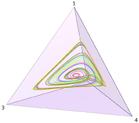
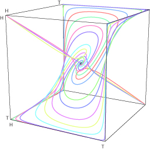
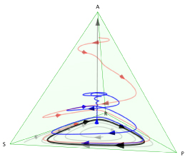
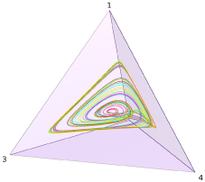
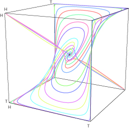
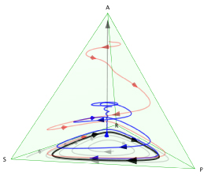

This page contains links to sample Mathematica output notebooks with rotatable 3D graphics. We describe the contents of these notebooks in our introduction to Dynamo. The notebooks can be opened in Mathematica versions 6 or above, or in Wolfram's free CDF Player. The images below show what you'll find in the notebooks; only the graphics in the notebooks themselves can be rotated, of course.


